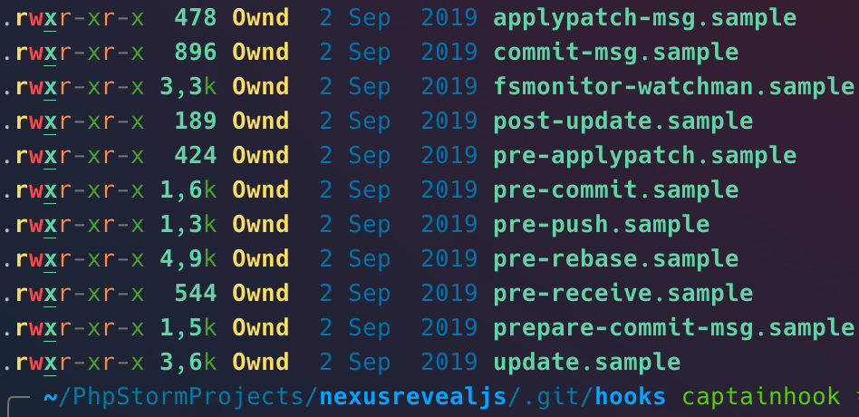
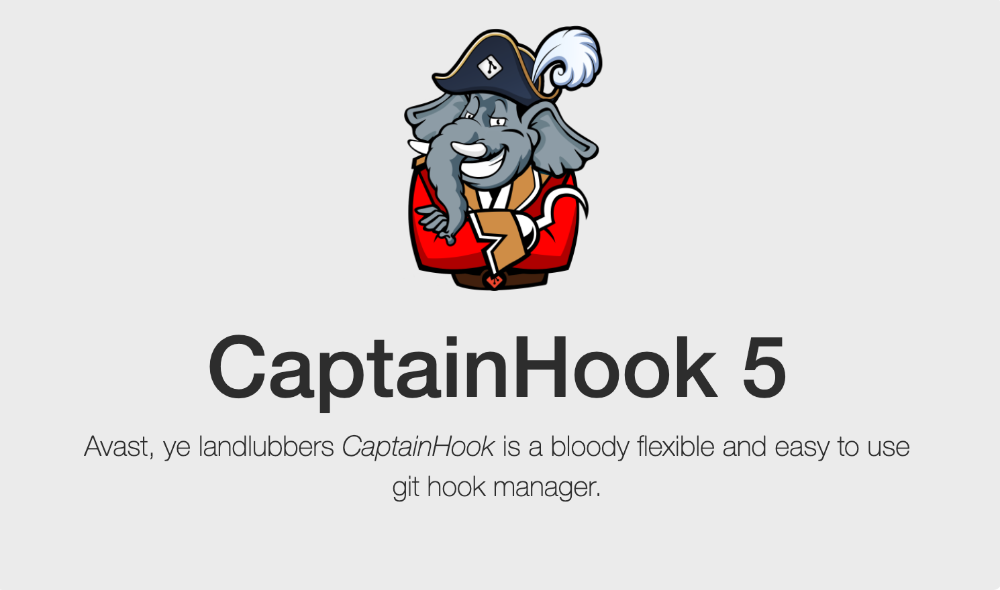
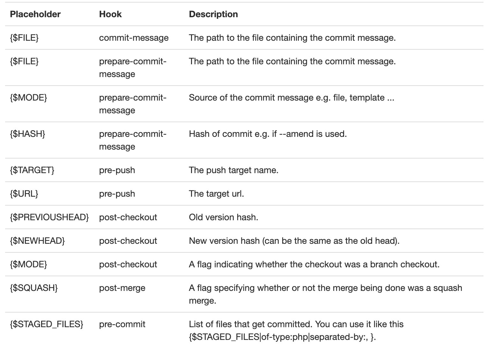

Captainhook
enforcing good commit messages & more
Agenda
- What are git hooks?
- Example "native" git hook
- Why are good commit messages important?
- Captain🪝 - to the rescue!
- Conclusion
What are git hooks?
Git hooks are basically just shell scripts, which can be bound to specific git commands

Example pre-push hook
git push orign/NXSFR-69-captainhook-presentation
#!/bin/zsh
#.git/hooks/pre-push
php ../../vendor/bin/phpunit
Why are good commit messages important?
Fix stuff
Was made by yourself
What are good commit messages?
What are good commit messages?
- Include your JIRA Ticket Number!
- Write Short, Detailed Commit Messages
- What changed from the last version?
- How did it resolve the issue?
- Why did you make the change?
CaptainHook 5 💪

How to install CaptainHook?
{
"require-dev": {
"captainhook/plugin-composer": "^5.0"
}
}
{
"scripts": {
"post-autoload-dump": "vendor/bin/captainhook install -f -s"
}
}
CaptainHook configuration
vendor/bin/captainhook configure
{
"pre-commit": {
"enabled": true,
"actions": [
{
"action": "phpunit"
},
{
"action": "phpcs --standard=psr2 src"
}
]
},
"pre-push": {
"enabled": false,
"action": "tools/phpunit.phar --configuration=phpunit.git.xml"
}
}
CaptainHook Placeholders
{
"pre-commit": {
"enabled": true,
"actions": [
{
"action": "tools/phpcs.phar --standard=psr12 {$STAGED_FILES|of-type:php}"
}
]
}
}
Placeholders & Variables

Conditional 🪝
{
"post-change": {
"enabled": true,
"actions": [
{
"action": "composer install",
"options": {},
"conditions": [
{
"exec": "\\CaptainHook\\App\\Hook\\Condition\\FileChanged\\Any",
"args": [
["composer.json", "composer.lock"]
]
}
]
}
]
}
}
Creating a custom 🪝
"commit-msg": {
"enabled": true,
"actions": [
{
"action": "\\MyName\\GitHook\\NoEmptyCommitMessages",
"options": []
}
]
}
CaptainHook configuration
class NoEmptyCommitMessages implements HookAction
{
public function execute(Config $config, IO $io, Repo $repository, Action $action) : void
{
$message = $repository->getCommitMsg();
if (empty($message->getContent())) {
throw new \Exception('Empty commit message is not allowed');
}
}
}
Conclusion
Some things to keep in mind!
- "native" git hooks are not versioned in the git repository!
- each developer can easily skip or remove local hooks!
- git hooks should be used on the server-side, if local git hooks are omitted by the developers
- sync your git directory into the container, if you are using docker!
CaptainHook with docker
{
"config": {
"run-mode": "docker",
"run-exec": "docker exec CONTAINER_NAME"
}
"pre-commit": {
...
}
}
Thank you for participating!
Any questions?